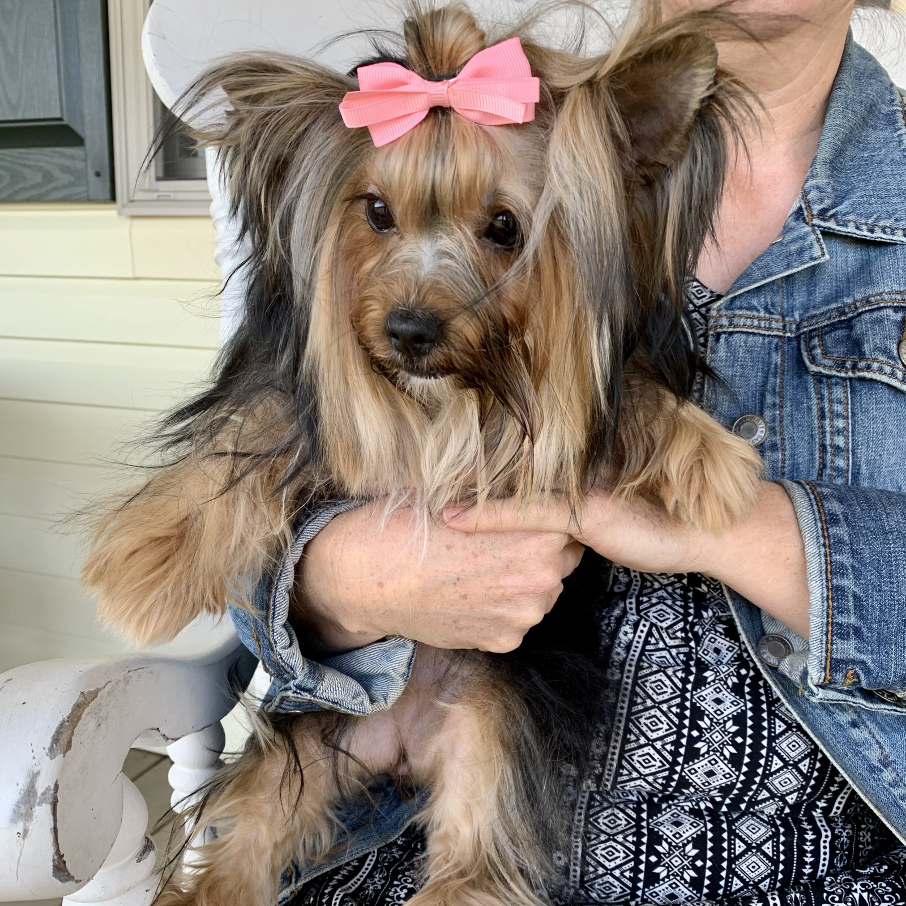
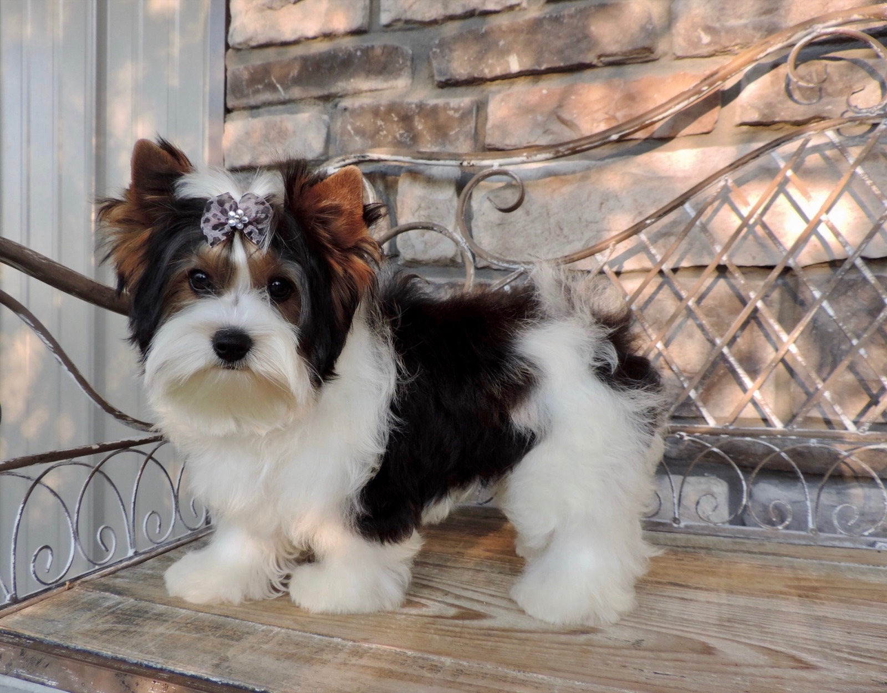

We raise all three, so this is one of the questions we answer most. Yorkies, Biewer Terriers, and Morkies are all small, affectionate, and wonderful with families, but they are not the same, and the right one for you comes down to the coat you want to care for, the look you love, and the personality that fits your home. Here is the honest comparison, from twenty years of raising them.
The quick comparison
| Yorkshire Terrier | Biewer Terrier | Morkie | |
|---|---|---|---|
| What it is | Classic breed | Breed of its own | Maltese × Yorkie cross |
| Color | Blue & tan | Tri-color (white, black, tan) | Varies; often cream/tan |
| Adult size | 4–7 lb | 4–8 lb | 5–10 lb |
| Coat | Silky hair | Silky hair | Softer, sometimes wavy |
| Grooming | Daily brush + trims | Daily brush + trims | Regular brush; mats easily |
| Personality | Bold, lively terrier | Sweet, playful | Gentle, easygoing |
The Yorkshire Terrier
The original and most recognizable of the three. Yorkies are bold, bright, and full of terrier spirit in a tiny package. They bond fiercely to their people and often think they are far bigger than they are. Their silky blue-and-tan coat is beautiful but grows continuously, so plan on daily brushing and regular trims (many families keep an easy "puppy cut").
Best for: someone who wants a classic, confident little companion with personality to spare.
The Biewer Terrier
A breed of its own, the Biewer is a striking tri-color — white, black, and tan — with the same silky coat and a famously sweet, playful temperament. A little softer in personality than a classic Yorkie for many families, and absolutely eye-catching.
Best for: someone who loves the Yorkie's size and coat but wants that gorgeous tri-color look and a gentle, happy nature.


The Morkie
A Maltese-Yorkie cross, the Morkie tends to be a touch larger and softer-coated, and is often the most easygoing and cuddly of the three. The coat can be lovely but mats easily, so regular brushing still matters.
Best for: someone who wants a gentle, affectionate lap companion and loves a soft, teddy-bear look.
So which should you choose?
- Want the classic look and bold personality? → Yorkshire Terrier.
- Love a unique tri-color and a sweet nature? → Biewer Terrier.
- Want the softest, most easygoing cuddler? → Morkie.
Honestly, you cannot go wrong — all three are raised in our home, health guaranteed, and placed as lifelong family companions. The best way to decide is to tell us about your family and let us help you match with the right little one. We even offer live video visits so you can meet them first.
Ready to meet yours?
See who is available now, or apply and we will help you choose between a Yorkie, Biewer, or Morkie.
See Available Puppies Read the Buyer's Guide